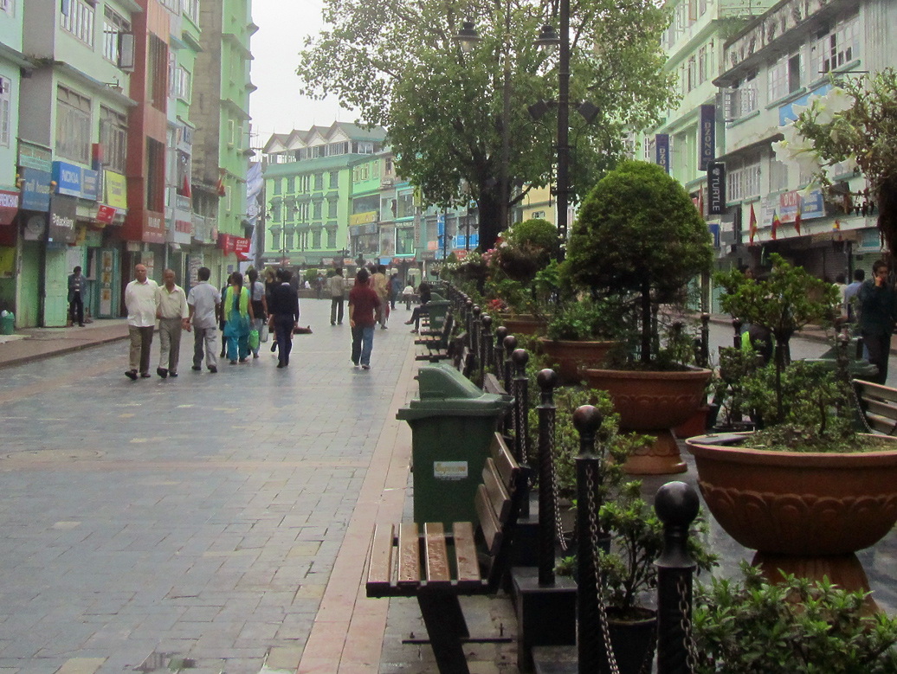
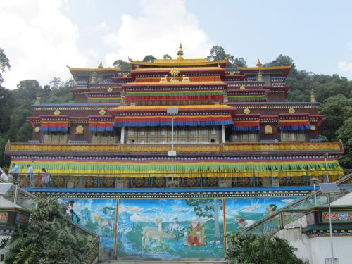
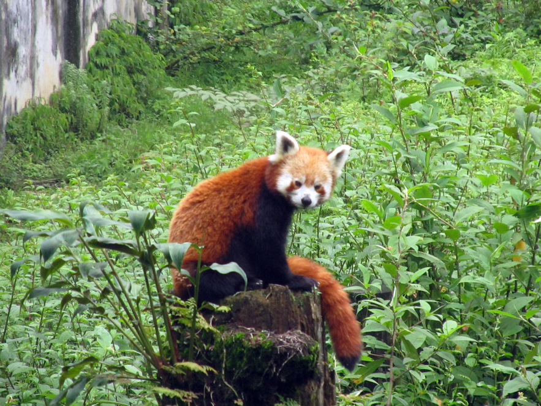

Sikkim offers plenty of sights for suited for the casual visitor to the most determined adventurer. A few years ago, I had a chance to visit this beautiful state. Here's a look at some of the places I visited in Sikkim.
GANGTOK
The laid-back capital of Sikkim, Gangtok is home to 100,000 people of various ethnicities. Gangtok has thankfully not yet succumbed to unplanned development (unlike Darjeeling) and this is why it still retains some of its old world charms.
The city is clean and the folks here are friendly and approachable. I found that many of the shops at prime locations such as M.G. Road are owned by enterprising Gujaratis.
RUMTEK MONASTERY
About 20kms outside of the city limits, this gompa is the seat of the Kagyu sect of Tibetan Buddhists. It is a three storeyed building, painted in bright attractive colours. Various stories from the Buddhist folkore are brought to life as painting on the outer walls of the gompa. The spacious courtyard has a large obelisk serenely overlooking the visitors passing by. Several precious paintings are housed within the complex.
HIMALAYAN ZOOLOGICAL PARK
This park is very close to Gangtok and it's worth a visit, if only for the Red Pandas. Although, small in size it does house a good number of feisty monkeys, leopards exotic birds and plants. The pandas are a joy to watch as they seem to be playing with each other most of the time. Since it's not a natural reserve, most of the animals were kept in enclosures and that limited the possibility of viewing certain notoriously shy animals.